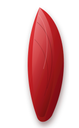
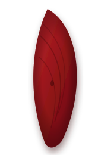

大墩三百年歷史名剎・開基湄洲正身三媽：
1. 入廟動線：遵循「左青龍進、右白虎出」，先敬拜天公爐，再敬拜湄洲聖母大殿。
2. 敬神報家門：心中默念信士姓名、農曆生辰、現居地址與請示具體事由。
3. 三聖杯應允：萬春宮傳承嚴謹六十甲子靈籤儀軌，搖動籤筒抽籤後，需連續擲出 3 個聖杯確認為正籤。
4. AI 籤詩入微：若未獲賜聖杯或有疑慮，系統自動串接老廟祝阿伯 AI 解籤與手搖飲奉茶安慰券！
萬春宮道長將於每月初一、十五朔望吉日，備香花果品焚表誦經：
萬春宮三百年古蹟巡禮蓋章進度：
親臨萬春宮現場靠近 LINE Touch 感應點，自動完成足跡蓋印！
萬春宮秉持「食物不浪費，愛心大家做」慈善宗旨，每年農曆七月中元普度與九月初九天上聖母飛昇秋祭清醮，信眾敬獻之贊普白米與民生物資，法會圓滿後全數轉贈台中在地孤兒院、安養機構與弱勢家庭。
萬春宮長年深耕中台灣文教，每年國曆 7 月舉辦「萬春盃學童書法暨繪畫比賽」，弘揚中華文字書道與媽祖慈悲文化，歷年吸引數千名中小學生熱烈角逐！
萬春宮歲次神佛千秋聖誕吉期（可一鍵預約 LINE 祝壽提醒通知）：
萬春宮道法科儀傳承：測算本命值年生肖與五鬼、天狗、白虎、刑剋、空亡之沖犯，由開基湄洲三媽賜福化解。
⚠️ 沖犯星煞：本命坐太歲，並逢「劍鋒、伏屍」星臨宮。
⚡ 潛在影響：情緒易起伏、勞心傷神，防刀剪金屬損傷與口舌紛擾。
✨ 開基湄洲三媽開示：「遇變思靜，以退為進，凡事三思而後行，心存善念自有吉神暗中護庇。」
【大甲鎮瀾宮 重建祈安清醮大典】
依循清代閩南宮廟古法：取淨碗盛滿白米、以信士隨身衣物封盤，由道長焚香叩請開基湄洲正身三媽下降，收攝驚魂、解化煞氣、安鎮三魂七魄。
🌾 白米卦象：米粒齊整圓潤，主浮煞盡散，驚擾已隨青煙化去。
📜 湄洲三媽敕令神咒：「天清地寧，三魂歸體，七魄守形，神刀一下，萬煞潛藏。急急如律令！」
🍵 廟祝奉茶撫慰：「心安即是家鄉，飲一杯熱茶，今夜定得甘甜好眠。」
【萬春宮正統淨車科儀】
新車牽回、行經事故路段、出入穢地或遇車關擦撞，由廟方法師以三媽淨水符灑淨車身四輪、誦咒解化車關煞氣，確保行車出入大吉平安（法師不收紅包，隨喜添油香）。
依循道法本命花欉儀軌：每人在陰司皆有一株本命花樹，白花主男、紅花主女。萬春宮註生娘娘慈悲，助夫妻添花換花、祈求麟兒鳳女。
【拜契神明・契子女福緣】
為祈求孩子好養易帶、乖巧聰穎，或信士成年後求神明常佑，可拜萬春宮神尊為「義父義母」，終身蒙神恩加被。
萬春宮每年正月初四接神日，九天司命真君降壇抽取「士、農、工、商、人口、六畜」六大四季聖籤，指點年度百業吉凶走勢：
📖 白話詳解：當前局勢表面平靜，但暗潮湧動。考生、公職與職場進階者，切莫急功近利更換跑道，宜守穩本分，待吉星太白金星護持，自能逢凶化吉安然過關。
✨ 開基三媽提點：穩紮根基，靜待良機，不爭一時之長短，終成大器。

